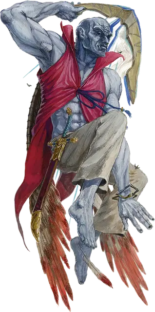

Облачный великан Злого воздуха
Cloud Giant of Evil Air
Огромный Великан, обычно нейтрально-злой

Класс Доспеха 14 (природный доспех)
Хиты 200 (16к12 + 96)
Скорость 40 футов, летая 40 футов
| мод | спас | ||
|---|---|---|---|
| СИЛ | 27 | +8 | +8 |
| ЛОВ | 10 | +0 | +0 |
| ТЕЛ | 22 | +6 | +10 |
| мод | спас | ||
|---|---|---|---|
| ИНТ | 12 | +1 | +1 |
| МДР | 16 | +3 | +7 |
| ХАР | 19 | +4 | +8 |
Навыки Восприятие +7, Проницательность +7, Скрытность +4
Чувства пассивное Восприятие 17
Языки Общий, Ауран, Великаний
Опасность 12 (8400 опыта)
Бонус мастерства +4
Особенности
Пролёт. Великан не провоцирует атаку, когда он вылетает за пределы досягаемости врага.
Действия
Мультиатака. Великан совершает две атаки Скимитаром и одну атаку Грозовым бумерангом.
Скимитар. . Рукопашная атака оружием: +12 к попаданию, досягаемость 10 футов, одна цель. Попадание: 18 (3к6 + 8) рубящего урона.
Грозовой бумеранг. . Дальнобойная атака оружием: +12 к попаданию, дистанция 60/240 футов, одна цель. Попадание: 15 (3к4 + 8) дробящего урона плюс 7 (2к6) урона звуком и цель должна преуспеть в спасброске Телосложения Сл 16, иначе станет ошеломлённой до конца своего следующего хода. Попадание или промах: Бумеранг магическим образом возвращается в руку великана.
Использование заклинаний. Великан накладывает одно из следующих заклинаний, используя Харизму в качестве базовой характеристики и без использования материальных компонентов (Сл спасброска от заклинаний 16):
• Неограниченно: обнаружение магии [detect magic], туманное облако [fog cloud], свет [light];
• 2/день: телекинез [telekinesis];
• 1/день: газообразная форма [gaseous form];
Описание
Учитывая присущую им связь с элементалем воздуха, облачные великаны, отвернувшиеся от богов Уложения, часто тяготеют к служению Ян-Син-Биню, принцу Злого Воздуха. Хитрость, харизма и явная физическая и магическая мощь этих великанов делают их подходящими для руководящих должностей в культах Стихийного Зла. Культ с облачным великаном во главе может стать грозной силой развращения и разрушения в мире. Как будто этого было недостаточно, облачные великаны часто приносят с собой огромные богатства, пополняя казну культа для финансирования более масштабных операций.
Облачный великан, служащий Злому Воздуху, носит волшебный жилет, украшенный крыльями из перьев птицы Рух и зачарованный стихией воздуха, позволяющей великану летать. Жилет работает только на великане, который его носит.